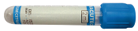
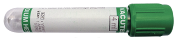
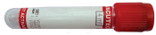
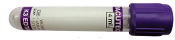
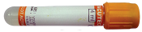

Meditsiinilise labori koduleht
Pealeht
Proovimaterjalide nimekiri
Proovikatsuti
Nimetus

Naatriumtsitraadiga katsuti

Naatriumhepariiniga katsuti

Lisandita katsuti

Etüleendiamiintetraatsetaadiga katsuti

Geeli ja hüübimisaktivaatoriga katsuti
Kui soovid proovimaterjale juurde tekitada vajuta
siia